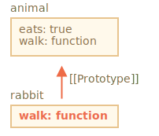

在编程中，我们经常会想获取并扩展一些东西。
例如，我们有一个 user 对象及其属性和方法，并希望将 admin 和 guest 作为基于 user 稍加修改的变体。我们想重用 user 中的内容，而不是复制/重新实现它的方法，而只是在其之上构建一个新的对象。
原型继承（Prototypal inheritance） 这个语言特性能够帮助我们实现这一需求。
在 JavaScript 中，对象有一个特殊的隐藏属性 [[Prototype]]（如规范中所命名的），它要么为 null，要么就是对另一个对象的引用。该对象被称为“原型”：
原型有点“神奇”。当我们想要从 object 中读取一个缺失的属性时，JavaScript 会自动从原型中获取该属性。在编程中，这种行为被称为“原型继承”。许多炫酷的语言特性和编程技巧都基于此。
属性 [[Prototype]] 是内部的而且是隐藏的，但是这儿有很多设置它的方式。
其中之一就是使用特殊的名字 __proto__，就像这样：
let animal = {
eats: true
};
let rabbit = {
jumps: true
};
*!*
rabbit.__proto__ = animal;
*/!*```smart header="__proto__ 是 [[Prototype]] 的因历史原因而留下来的 getter/setter"
请注意，__proto__ 与 [[Prototype]] **不一样**。__proto__ 是 [[Prototype]] 的 getter/setter。
__proto__ 的存在是历史的原因。在现代编程语言中，将其替换为函数 Object.getPrototypeOf/Object.setPrototypeOf 也能 get/set 原型。我们稍后将学习造成这种情况的原因以及这些函数。
根据规范，__proto__ 必须仅在浏览器环境下才能得到支持，但实际上，包括服务端在内的所有环境都支持它。目前，由于 __proto__ 标记在观感上更加明显，所以我们在后面的示例中将使用它。
如果我们在 `rabbit` 中查找一个缺失的属性，JavaScript 会自动从 `animal` 中获取它。
例如：
```js
let animal = {
eats: true
};
let rabbit = {
jumps: true
};
*!*
rabbit.__proto__ = animal; // (*)
*/!*
// 现在这两个属性我们都能在 rabbit 中找到：
*!*
alert( rabbit.eats ); // true (**)
*/!*
alert( rabbit.jumps ); // true这里的 (*) 行将 animal 设置为 rabbit 的原型。
当 alert 试图读取 rabbit.eats (**) 时，因为它不存在于 rabbit 中，所以 JavaScript 会顺着 [[Prototype]] 引用，在 animal 中查找（自下而上）：
在这儿我们可以说 "animal 是 rabbit 的原型"，或者说 "rabbit 的原型是从 animal 继承而来的"。
因此，如果 animal 有许多有用的属性和方法，那么它们将自动地变为在 rabbit 中可用。这种属性被称为“继承”。
如果我们在 animal 中有一个方法，它可以在 rabbit 中被调用：
let animal = {
eats: true,
*!*
walk() {
alert("Animal walk");
}
*/!*
};
let rabbit = {
jumps: true,
__proto__: animal
};
// walk 方法是从原型中获得的
*!*
rabbit.walk(); // Animal walk
*/!*该方法是自动地从原型中获得的，像这样：
原型链可以很长：
let animal = {
eats: true,
walk() {
alert("Animal walk");
}
};
let rabbit = {
jumps: true,
*!*
__proto__: animal
*/!*
};
let longEar = {
earLength: 10,
*!*
__proto__: rabbit
*/!*
};
// walk 是通过原型链获得的
longEar.walk(); // Animal walk
alert(longEar.jumps); // true（从 rabbit）这里只有两个限制：
__proto__，JavaScript 会抛出错误。__proto__ 的值可以是对象，也可以是 null。而其他的类型都会被忽略。当然，这可能很显而易见，但是仍然要强调：只能有一个 [[Prototype]]。一个对象不能从其他两个对象获得继承。
原型仅用于读取属性。
对于写入/删除操作可以直接在对象上进行。
在下面的示例中，我们将为 rabbit 分配自己的 walk：
let animal = {
eats: true,
walk() {
/* rabbit 不会使用此方法 */
}
};
let rabbit = {
__proto__: animal
};
*!*
rabbit.walk = function() {
alert("Rabbit! Bounce-bounce!");
};
*/!*
rabbit.walk(); // Rabbit! Bounce-bounce!从现在开始，rabbit.walk() 将立即在对象中找到该方法并执行，而无需使用原型：

访问器（accessor）属性是一个例外，因为分配（assignment）操作是由 setter 函数处理的。因此，写入此类属性实际上与调用函数相同。
也就是这个原因，所以下面这段代码中的 admin.fullName 能够正常运行：
let user = {
name: "John",
surname: "Smith",
set fullName(value) {
[this.name, this.surname] = value.split(" ");
},
get fullName() {
return `${this.name} ${this.surname}`;
}
};
let admin = {
__proto__: user,
isAdmin: true
};
alert(admin.fullName); // John Smith (*)
// setter triggers!
admin.fullName = "Alice Cooper"; // (**)在 (*) 行中，属性 admin.fullName 在原型 user 中有一个 getter，因此它会被调用。在 (**) 行中，属性在原型中有一个 setter，因此它会被调用。
在上面的例子中可能会出现一个有趣的问题：在 set fullName(value) 中 this 的值是什么？属性 this.name 和 this.surname 被写在哪里：在 user 还是 admin？
答案很简单：this 根本不受原型的影响。
无论在哪里找到方法：在一个对象还是在原型中。在一个方法调用中，this 始终是点符号 . 前面的对象。
因此，setter 调用 admin.fullName= 使用 admin 作为 this，而不是 user。
这是一件非常重要的事儿，因为我们可能有一个带有很多方法的大对象，并且还有从其继承的对象。当继承的对象运行继承的方法时，它们将仅修改自己的状态，而不会修改大对象的状态。
例如，这里的 animal 代表“方法存储”，rabbit 在使用其中的方法。
调用 rabbit.sleep() 会在 rabbit 对象上设置 this.isSleeping：
// animal 有一些方法
let animal = {
walk() {
if (!this.isSleeping) {
alert(`I walk`);
}
},
sleep() {
this.isSleeping = true;
}
};
let rabbit = {
name: "White Rabbit",
__proto__: animal
};
// 修改 rabbit.isSleeping
rabbit.sleep();
alert(rabbit.isSleeping); // true
alert(animal.isSleeping); // undefined（原型中没有此属性）结果示意图：
如果我们还有从 animal 继承的其他对象，像 bird 和 snake 等，它们也将可以访问 animal 的方法。但是，每个方法调用中的 this 都是在调用时（点符号前）评估的对应的对象，而不是 animal。因此，当我们将数据写入 this 时，会将其存储到这些对象中。
所以，方法是共享的，但对象状态不是。
for..in 循环也会迭代继承的属性。
例如：
let animal = {
eats: true
};
let rabbit = {
jumps: true,
__proto__: animal
};
*!*
// Object.keys 只返回自己的 key
alert(Object.keys(rabbit)); // jumps
*/!*
*!*
// for..in 会遍历自己以及继承的键
for(let prop in rabbit) alert(prop); // jumps，然后是 eats
*/!*如果这不是我们想要的，并且我们想排除继承的属性，那么这儿有一个内建方法 obj.hasOwnProperty(key)：如果 obj 具有自己的（非继承的）名为 key 的属性，则返回 true。
因此，我们可以过滤掉继承的属性（或对它们进行其他操作）：
let animal = {
eats: true
};
let rabbit = {
jumps: true,
__proto__: animal
};
for(let prop in rabbit) {
let isOwn = rabbit.hasOwnProperty(prop);
if (isOwn) {
alert(`Our: ${prop}`); // Our: jumps
} else {
alert(`Inherited: ${prop}`); // Inherited: eats
}
}这里我们有以下继承链：rabbit 从 animal 中继承，animal 从 Object.prototype 中继承（因为 animal 是对象字面量 {...}，所以这是默认的继承），然后再向上是 null：

注意，这有一件很有趣的事儿。方法 rabbit.hasOwnProperty 来自哪儿？我们并没有定义它。从上图中的原型链我们可以看到，该方法是 Object.prototype.hasOwnProperty 提供的。换句话说，它是继承的。
……如果 for..in 循环会列出继承的属性，那为什么 hasOwnProperty 没有像 eats 和 jumps 那样出现在 for..in 循环中？
答案很简单：它是不可枚举的。就像 Object.prototype 的其他属性，hasOwnProperty 有 enumerable:false 标志。并且 for..in 只会列出可枚举的属性。这就是为什么它和其余的 Object.prototype 属性都未被列出。
几乎所有其他键/值获取方法，例如 `Object.keys` 和 `Object.values` 等，都会忽略继承的属性。
它们只会对对象自身进行操作。**不考虑** 继承自原型的属性。[[Prototype]] 属性，它要么是另一个对象，要么就是 null。obj.__proto__ 访问它（历史遗留下来的 getter/setter，这儿还有其他方法，很快我们就会讲到）。[[Prototype]] 引用的对象被称为“原型”。obj 的一个属性或者调用一个方法，并且它不存在，那么 JavaScript 就会尝试在原型中查找它。obj.method()，而且 method 是从原型中获取的，this 仍然会引用 obj。因此，方法始终与当前对象一起使用，即使方法是继承的。for..in 循环在其自身和继承的属性上进行迭代。所有其他的键/值获取方法仅对对象本身起作用。